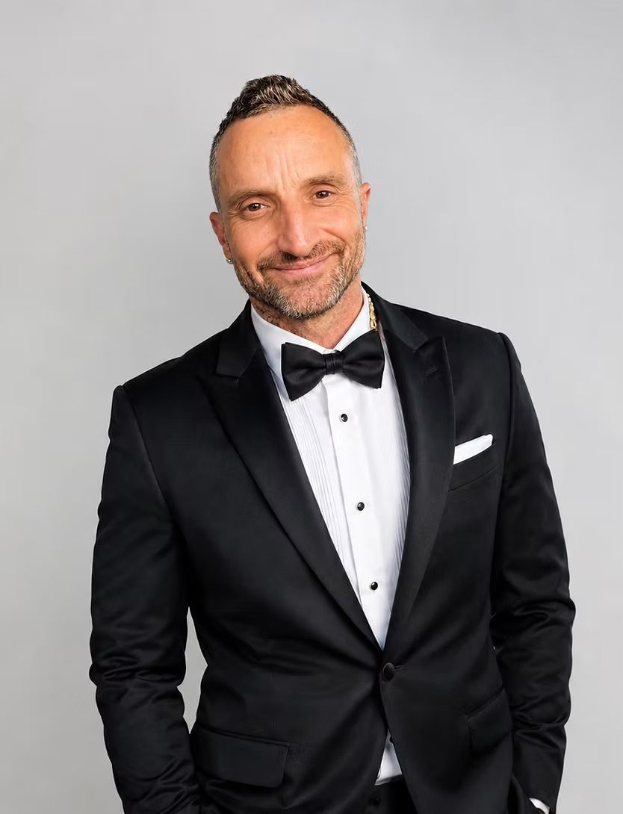

Who we are
A foundation built by someone who has been there — for everyone still going through it.
Our mission
The Angus Anderson Foundation is dedicated to supporting cancer patients and survivors facing mental-health challenges and socio-economic struggles. We provide a platform for those marginalized by cancer-related issues — financial, mental, or physical — offering resources and raising funds so that everyone has access to essential care and support.
Our values
- Dignity first. Asking for help should never feel like begging.
- The whole fight. Cancer is medical, financial, and mental — support should be too.
- Community. Small acts, done together, carry people through the hardest days.
- Transparency. Funds raised go to the people and programs we say they do.
Angus's story
Angus Anderson's cancer journey began in September 2019, and it started with his jaw: two broken bone fragments and the loss of six teeth. The treatments that followed came with costs that insurance didn't cover, and the disease came with a cost that no one warns you about — his job, and with it the income a fight like this depends on.
Dental work after cancer isn't cosmetic. It's eating, speaking, and looking in the mirror without being reminded of the worst year of your life. Angus paid for much of it out of pocket, while managing the anxiety, depression, and isolation that so often shadow a cancer diagnosis and remission.
Then cancer came back — and he beat it a second time.
Coming through that twice left him with a conviction: the gaps he fell through shouldn't exist, and no patient should have to navigate them alone. The Angus Anderson Foundation is his answer — raising funds for patients' real-world costs, connecting people with mental-health support, and building a community that shows up, whether that's at a trivia night or waist-deep in mud at a Tough Mudder.

"Cancer took my teeth, my job, and very nearly my hope. Nobody should have to choose between their treatment and their rent. That's why this foundation exists." — Angus Anderson, Founder
What we fund
Practical support, decided case by case with compassion and speed.
- Medical and dental bills not covered by provincial health plans or insurance
- Transportation to and from treatment centres
- Counselling and mental-health services for patients, survivors, and caregivers
- Support groups and peer connection programs
- Emergency help with everyday costs when treatment interrupts work
- Fundraising for cancer research and treatment access
Our team
The volunteers and board members who keep the foundation moving.
Team profiles are on their way — photos and bios will appear here once the board signs off. Want to join us? Get in touch.
Contact us
Whether you need support, want to volunteer, or have a fundraising idea — we'd love to hear from you.
Email: info@angusandersonfoundation.org
Social: Instagram · Facebook